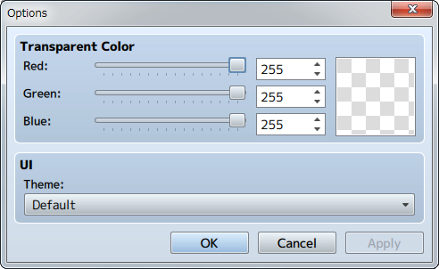

Menu Bar Contents
[File] Menu
- Open MV Project
-
Open an MV [Game.rpgproject] file.
- New Timeline
-
Clear the timeline.
- Import Event
-
Load a timeline from a JSON file.
- Export Event
-
Export the timeline as a JSON file.
- Add Preset
-
Save the timeline state as a user preset.
User presets are saved in the following folders.
Windows: C:¥Users¥{UserName}¥AppData¥Local¥KADOKAWA¥SceneBuilder¥Preset
Mac: /Users/{UserName}/Library/Application\ Support/KADOKAWA/SceneBuilder/Preset
- Exit Scene Builder
-
Close the Scene Builder.
[Edit] Menu
- Undo
-
Undo the previous operation.
- Redo
-
Redo an operation that has been undone.
- Cut
Delete the selected event and copy it to the clipboard.
-
- Copy
-
Copy the selected event to the clipboard.
- Paste
-
Paste an event from the clipboard to the cursor's location.
- Delete
-
Delete the selected event.
- Copy AS Event
-
Copy all the events on the timeline in the MV event format.
[Insert] Menu
- New Lane
- Add a row to the timeline.
- Show Picture Event
- Add a Show Picture Event to the timeline.
- Show Text Event
- Add a Show Text Event to the timeline.
- Show Scrolling Text Event
- Add a Show Scrolling Text Event to the timeline.
- Fade Screen Event
- Add a Fade Screen Event to the timeline.
- Screen Event
- Add a Screen Event to the timeline.
- Audio Event
- Add an Audio Event to the timeline.
- Fadeout Audio Event
- Add an Fadeout Audio Event to the timeline.
- Marker
- Add a Marker (Annotation Event) to the timeline.
- Preset
- A Preset is scene data that has been put together beforehand. When a Preset Scene uses images or audio materials, the files will be copied and overwritten into the project folder.
[Scale] Menu
- Zoom In
- Zoom In the preview.
- Zoom Out
- Zoom Out the preview.
- Actual Size
- Display the preview at the actual size.
- Shrink
- Display the timeline in a smaller format (One frame = one pixel).
- Expand
- Display the timeline in a larger format (One frame = four pixels).
[Controls] Menu
- Start of Timeline
- Move the cursor to the first frame. If this has no effect, click on the timeline to bring it into focus.
- End of Timeline
- Move the cursor to the last frame.
- Next Frame
- Move the cursor forward one frame.
- Previous Frame
- Move the cursor back one frame.
- Next Event
- Move the cursor to the starting point of the next event.
- Previous Event
- Move the cursor to the starting point of the previous event.
- Play
- Start a playback of the preview.
- Stop
- Pause the preview playback.
[Tools] Menu
- Options
-
Change the background color and the appearance of the application.

[Game] Menu
- Open Folder
- Open a project folder.
[Help] Menu
- Contents
-
Display help. * Opens a browser window.
- Version
-
Display the version of the software.